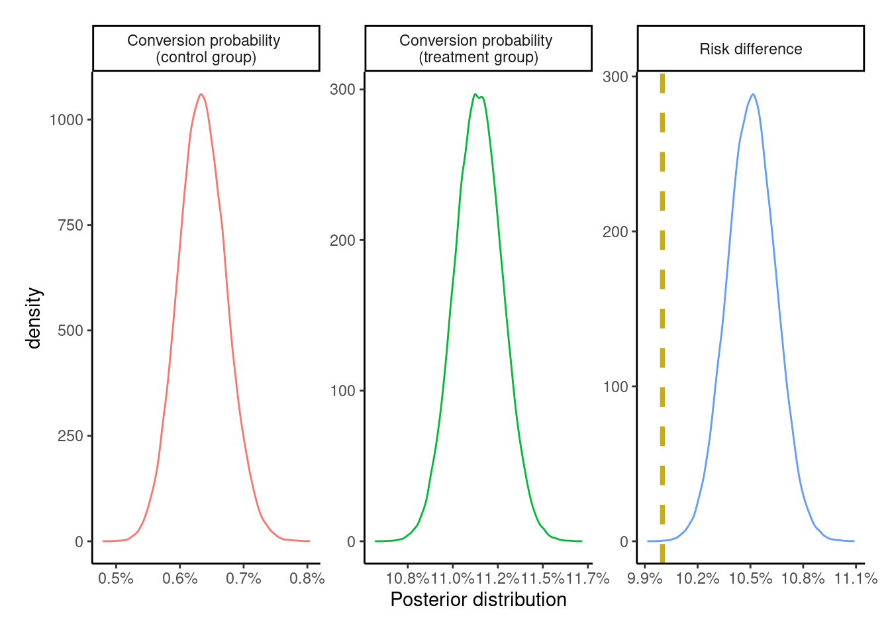

── Attaching core tidyverse packages ──────────────────────── tidyverse 2.0.0 ──
✔ dplyr 1.1.2 ✔ readr 2.1.4
✔ forcats 1.0.0 ✔ stringr 1.5.0
✔ ggplot2 3.4.2 ✔ tibble 3.2.1
✔ lubridate 1.9.2 ✔ tidyr 1.3.0
✔ purrr 1.0.1
── Conflicts ────────────────────────────────────────── tidyverse_conflicts() ──
✖ dplyr::filter() masks stats::filter()
✖ dplyr::lag() masks stats::lag()
ℹ Use the conflicted package (<http://conflicted.r-lib.org/>) to force all conflicts to become errorsThis (longer-than-expected) post compares intention-to-treat, per-protocol, as-treated, and instrumental variable analyses on a simulated dataset. Along the way, it goes off on fun tangents like 1) comparing results from different estimators for risk difference (a.k.a. uplift), and 2) comparing the bootstrap distribution with the Bayesian posterior distribution and the normal approximation for the risk difference. Finally, it uses the estimated probabilities to get the posterior predictive distribution for the total profit under different scenarios. This was written largely for me to learn about IV methods in order to deal with the problem of estimating the effect of a treatment under non-compliance in randomized experiments.
Introduction
One of the first problems I ever cut my teeth on as a data scientist many years ago was to analyze data from a marketing / advertising campaign to assess the impact of an advertisement (ad) on sales of a certain product.
It was a simple experimental dataset from a two-arm1 randomized controlled trial. The most challenging part of that analysis was how to analyze individuals – the so-called non-compliers2 – who were assigned to the treatment group eligible to view an ad, but who did not actually end up seeing a single ad.
1 i.e., an experiment with two groups – treatment and control
2 in the usual terminology used in the instrumental variable methods literature
All details below are of a simplified version of the problem similar to the one I worked on, and have no resemblance to the real constraints / numbers / settings from the actual problem. This exact same problem shows up in pretty much every field (marketing, advertising, pharma, tech, psychology, economics, etc.) where experiments are regularly conducted, and the analyses in this post are applicable to those situations as well.
Problem description
Let’s say a company has been working on updating an existing version of a product, and wants to know whether they should invest in an advertising campaign on a specific channel (say YouTube / Instagram ads) to promote the new product. Since buying ads cost money, the campaign would have to be profitable enough in terms of increased sales to justify the ad spend3.
3 The advertising company, on the other hand, is more interested in assessing the effectiveness of advertising, so would be happier to see a strong positive effect of advertising.
The main interest is in (functions of) two quantities – \(\text{Pr}[Y^{a=0} = 1]\), which is the proportion of sales in a population not shown the ad; and \(\text{Pr}[Y^{a=1} = 1]\), which is the proportion of sales in a population which is shown the ad. These can be used to calculate the risk difference / uplift (\(\text{Pr}[Y^{a=1} = 1] - \text{Pr}[Y^{a=0} = 1]\)), the risk ratio / relative risk / lift (\(\text{Pr}[Y^{a=1} = 1] / \text{Pr}[Y^{a=0} = 1]\)), or any other quantity listed in the tables here. The risk difference can then be used to calculate the additional profit from showing the ad compared to doing nothing.
The cleanest way of estimating these probabilities is through an experiment. First, a target population – say, users of a given product – is identified, and then, this group is randomly split into a treatment and a control group. Individuals assigned to the treatment group are eligible to see an ad for the newer, updated version of the product, and the control group is ineligible to view the ad. The campaign runs for a two week period, where individuals in the treatment group see an ad multiple times. The outcome for this campaign is sales of the newer product in each of the two groups in the six-week period from the start of the campaign.
Before writing any code, the tidyverse packages is loaded.
A DAG, or a directed acyclic graph for this problem can be visualized as follows
Code

where \(Y\) is a binary outcome (bought the newer version of the product or not during the follow-up period), \(A\) is a binary treatment variable (saw the ad or not), \(Z\) is a binary variable indicating group assignment (i.e., randomly assigned to the treatment or control group), and U is the set of (unmeasured) confounder(s), i.e., one or more variables that both impact whether an individual ends up seeing the ad, and whether they end up buying the newer product or not.
This DAG encodes several assumptions:
Group assignment \(Z\) only affects whether someone sees an ad or not (variable \(A\))
There are some unmeasured common causes (confounders) \(U\) that make our life difficult by potentially distorting the relationship between \(A\) and \(Y\)
\(Z\) has no direct effect on Y; only an indirect effect entirely (mediated) via \(A\)
\(Z\) has no relationship with \(U\), since \(Z\) is randomly assigned and should be balanced with respect to \(U\) (unless we’re unlucky and there’s some imbalance by chance)
After the campaign is over, it is observed that a subset of the treatment group never received the treatment, i.e., didn’t see the ad at all. The main question for the analysis is then – how should these non-compliers be analyzed? In this post I look at three possible choices:
Should they be analysed as part of the treatment group, despite not receiving the treatment?
Should they be excluded from the analysis altogether?
Should they be included in the control group since they were untreated?
Simulate data
Before the question in the previous section can be answered, we need to generate hypothetical data4 for this fictional ad campaign.
4 Inspired by a comment on this post, and the Imbens, Rubin 1997 paper linked therein.
What the following code does is it first partitions the population of 100,000 individuals into an 80-20% mix of compliers and non-compliers. Compliers are the individuals that would watch the ad if they were assigned to the target group. Non-compliers are the individuals who would not comply with the group they’re randomized to. More on this in the IV section below. Then, the potential outcomes for each individual under the two treatments depending on their compliance status are simulated.
If \(C_i = 1\) denotes whether individual \(i\) is a complier, and \(C_i = 0\) otherwise, then \(\text{Pr}[Y^{a = 0}_i = 1| C_i = 0] = \text{Pr}[Y^{a = 1}_i = 1| C_i = 0] = 0.1\%\), where the probability of purchasing the new product is very small among the non-compliers independent of whether they’re assigned to the treatment or the control group.
Among the compliers, \(\text{Pr}[Y^{a = 0}_i = 1| C_i = 1] = 1\%\), i.e., 1% of the individuals would buy the new product if nobody was shown the ad. If the ad is rolled out to the full population, then \(\text{Pr}[Y^{a = 1}_i = 1| C_i = 1] = 11\%\), which leads to an average treatment effect (ATE) among the compliers of +10 percentage points.
These individuals are randomly assigned to the treatment (70%) or control (30%) group. Their actual treatment status (i.e., treated or untreated) is a product of the group they’re assigned to and their compliance. Their realized outcome is the outcome corresponding to the group they’re assigned to.
Code
simulate_data <- function(n = 100000L,
pY0 = 0.01,
risk_diff = 0.1,
seed = 23,
p_compliers = 0.8,
p_treatment = 0.7,
pY_non_compliers_factor = 0.1) {
pY1 <- pY0 + risk_diff
pY_nc <- pY_non_compliers_factor * pY0
set.seed(seed)
data <- tibble(
id = 1:n,
# the underlying population can be stratified into
# never-takers and compliers
complier = rbinom(n, 1, prob = p_compliers),
# generate individual potential outcomes
# under control and treatment, i.e., Pr[Y^0 = 1]
Y0 = case_when(
complier == 0 ~ rbinom(n, 1, pY_nc),
complier == 1 ~ rbinom(n, 1, pY0),
),
# assuming a constant effect of +10 percentage points
# among the compliers, and no average effect under the never-takers
Y1 = case_when(
complier == 0 ~ rbinom(n, 1, pY_nc),
complier == 1 ~ rbinom(n, 1, pY1)
),
# treatment assigned at random
# 70-30 split into treatment / control
Z = rbinom(n, 1, prob = p_treatment),
# treatment uptake depends on
# being assigned to treatment (Z = 1)
# AND being a complier (C = 1)
A = Z * complier,
# generate observed response using the
# consistency equation
Y = (1 - Z) * Y0 + Z * Y1
)
return(data)
}
# creating these variables as they'll be helpful later on
# population size
n <- 100000L
# P[Y^0 = 1]
pY0 <- 0.01
# P[Y^1 = 1], ATE of +10 pct. pts.
pY1 <- pY0 + 0.1
data <- simulate_data(n = n, pY0 = pY0, risk_diff = 0.1)
glimpse(data)Rows: 100,000
Columns: 7
$ id <int> 1, 2, 3, 4, 5, 6, 7, 8, 9, 10, 11, 12, 13, 14, 15, 16, 17, 18…
$ complier <int> 1, 1, 1, 1, 0, 1, 0, 0, 0, 0, 0, 1, 1, 1, 0, 1, 1, 1, 0, 1, 1…
$ Y0 <int> 0, 0, 0, 0, 0, 0, 0, 0, 0, 0, 0, 0, 0, 0, 0, 0, 0, 0, 0, 0, 0…
$ Y1 <int> 0, 0, 0, 1, 0, 0, 0, 0, 0, 0, 0, 0, 0, 1, 0, 0, 0, 0, 0, 0, 0…
$ Z <int> 1, 1, 1, 0, 1, 0, 1, 1, 1, 1, 0, 1, 0, 1, 1, 1, 1, 1, 1, 0, 1…
$ A <int> 1, 1, 1, 0, 0, 0, 0, 0, 0, 0, 0, 1, 0, 1, 0, 1, 1, 1, 0, 0, 1…
$ Y <dbl> 0, 0, 0, 0, 0, 0, 0, 0, 0, 0, 0, 0, 0, 1, 0, 0, 0, 0, 0, 0, 0…In this simulated dataset, we’ve got information on compliance and the potential outcome under each treatment at the individual level. However, from a real experiment, only the \(Z, A, Y\) columns would be observed.
The exposition pipe %$% operator – similar to the pipe %>% operator – is exported from the magrittr package and used with base::table() to expose the variables in the data frame to the table function to produce contingency tables.
Z
complier 0 1
0 0.1974162 0.2003373
1 0.8025838 0.7996627Since the treatment \(Z\) is randomly assigned, the proportion of compliers in each group is nearly the same as expected.
There are several effects that can be estimated for this problem each with its own advantages and disadvantages.
Intention-to-treat (ITT)
The intention-to-treat (ITT) effect is the effect of being assigned to the treatment instead of the effect of the treatment itself. These are identical when treatment compliance / adherence is perfect, i.e, when all the individuals only take the treatment they are assigned to, but not otherwise.
For this problem, the ITT analysis would analyse individuals based on the group they were assigned to, and not the treatment they ultimately received. Those in the treatment group who didn’t see a single ad would be analysed as part of the treatment group rather than being excluded from the analysis, or being analysed as part of the control group.
An advantage of an ITT analysis is that randomization preserves the balance of confounders in both the treatment and control groups, so the \(Z-Y\) association remains unconfounded and a valid, albeit conservative5 effect of assigning the treatment at the population level. However, this validity would be affected6 if this ad is rolled out to another target population – a different period in time, or another geographical location – with a different proportion of (non-)compliers7.
5 Section 22.1 of the what-if book mentions that while the ITT estimate is usually conservative, it’s not guaranteed to be attenuated compared to the per-protocol effect (described in the next section) for 1) non-inferiority trials, or 2) if the per-protocol effect is not monotonic for all individuals and non-compliance is high. It also lists other counterarguments (e.g., lack of transportability) against the ITT effect.
6 Rerunning the data simulation chunk above with simulate_data(p_compliers = 0.4) %>% mutate(diff = Y1 - Y0) %>% pull(diff) %>% mean() instead of 0.8 leads to an ITT estimate of +4 instead of +8 percentage points, even though the effect of the treatment itself is still +10 percentage points.
7 For a garden-variety ad campaign, the proportion of compliers could be effectively random, unless the ad in question is visually appealing, or contentious. On the contrary, for something like a vaccine in a global pandemic, compliance could vary wildly between the trial and rollout at the population level. Source: reading internet discussions between 2021-2022.
Estimators / models
Since both \(Y\) and \(Z\) are binary variables, an estimate of the ITT effect can be obtained by fitting a simple logistic regression model, and using the marginaleffects package to perform g-computation / (marginal / model-based) standardization to get the risk difference (and the associated CIs)
data %>%
glm(Y ~ Z, family = binomial(link = "logit"), data = .) %>%
marginaleffects::avg_comparisons(variables = "Z")
Term Contrast Estimate Std. Error z Pr(>|z|) S 2.5 % 97.5 %
Z 1 - 0 0.0807 0.0012 67 <0.001 Inf 0.0783 0.083
Columns: term, contrast, estimate, std.error, statistic, p.value, s.value, conf.low, conf.high or by fitting an identity-link logistic regression where the estimated coefficient for \(Z\) can be directly interpreted as the risk difference
data %>%
glm(Y ~ Z, family = binomial(link = "identity"), data = .) %>%
broom::tidy(conf.int = TRUE) %>%
mutate(across(.cols = where(is.numeric), .fns = ~ round(.x, 4)))# A tibble: 2 × 7
term estimate std.error statistic p.value conf.low conf.high
<chr> <dbl> <dbl> <dbl> <dbl> <dbl> <dbl>
1 (Intercept) 0.0087 0.0005 16.2 0 0.0077 0.0098
2 Z 0.0807 0.0012 67.0 0 0.0783 0.083 The use of glm + g-computation here is a bit overkill, as the same estimate can be obtained by looking at the 2x2 table of proportions scaled to sum to 1 within each column
Z
Y 0 1
0 29772 63715
1 261 6252 Z
Y 0 1
0 0.991309559 0.910643589
1 0.008690441 0.089356411and taking the difference of \(P[Y = 1 | Z]\) in the two groups to give the risk difference \(\hat{p}_1 - \hat{p}_0\), where \(\hat{p}_0 = \text{Pr}[Y = 1 | Z = 0]\) and \(\hat{p}_1 = \text{Pr}[Y = 1 | Z = 1]\)
Additionally, a wald-type CI can be obtained using the formula for variance mentioned (using counts) here or (using proportions) here
\[ SE(\hat{p}_1 - \hat{p}_0) = \sqrt{\frac{\hat{p}_0 (1 - \hat{p}_0)}{n_0} + \frac{\hat{p}_1 (1 - \hat{p}_1)}{n_1}} \]
which results in the same standard error
Code
[1] 0.0012This paper mentions other ways of estimating the risk difference from different models, e.g. linear regression + sandwich estimator for the standard errors, which are again identical to the ones from the other methods above
lm_mod <- lm(Y ~ Z, data = data)
lm_mod %>%
broom::tidy() %>%
select(term, estimate, model_SE = std.error) %>%
mutate(robust_SE = sqrt(diag(sandwich::vcovHC(lm_mod))))# A tibble: 2 × 4
term estimate model_SE robust_SE
<chr> <dbl> <dbl> <dbl>
1 (Intercept) 0.00869 0.00141 0.000536
2 Z 0.0807 0.00168 0.00120 However, getting a distribution of this effect as opposed to just a 95% CI can be more informative from a decision making point of view. This distribution can be obtained three ways – 1) plugging the estimate and its standard error into a normal distribution and simulating effect sizes from that; 2) using the (nonparametric) bootstrap to resample the data and getting the bootstrap distribution of effect sizes; 3) using a Bayesian model to get the posterior distributions of the parameters from the model.
For the rest of the analyses, I pick option 3, where the simple (Bayesian) Beta-Binomial model is fit to this data separately within the treatment and the control groups. Taking the difference of these two (Beta) posterior distributions produces the posterior distribution of the risk difference. The bayesAB package in R can quickly fit Beta-Binomial models, or the brms package can be used for more general models.
Back to ITT analysis
A \(\text{Beta}(\alpha = 1, \beta = 9)\) prior is specified for the probability of success in each arm reflecting the knowledge that the we can expect the conversion in each group to be somewhere between 0%-70%. Normally this depends on the product in question – expensive and / or infrequently bought products are not expected to lead to very large conversion rates.
The following shows a summary of 10,000 draws from the prior distribution for the parameters
Min. 1st Qu. Median Mean 3rd Qu. Max.
0.0000017 0.0313705 0.0740948 0.1002186 0.1430362 0.7405391 which implies the following prior distribution for the risk difference
Min. 1st Qu. Median Mean 3rd Qu. Max.
-0.6858270 -0.0709874 -0.0000165 0.0000020 0.0699090 0.6885754 A priori, we expect the difference to be pretty small with mean of close to 0, but allowing for large differences of +/- 60-70%. We can also visualize these distributions
Code
bind_rows(
tibble(x = rbeta(1e5, 1, 9), cat = "Prior conversion probability"),
tibble(x = rbeta(1e5, 1, 9) - rbeta(1e5, 1, 9),
cat = "Prior risk difference")
) %>%
ggplot(aes(x = x, group = cat, color = cat)) +
geom_density() +
theme_classic() +
xlab("") +
scale_x_continuous(labels = scales::percent) +
facet_wrap(~ cat, scales = "free") +
guides(color = "none")To get the posterior distribution for conversion in each arm, the counts from the 2x2 contingency table can be plugged into the formula for Beta posterior distribution \(\text{Beta}(y + \alpha, n - y + \beta)\), where \(y\) corresponds to the count for \(Y = 1\), and \(n-y\) for \(Y = 0\).
This gives \(p (\alpha_0, \beta_0|y) \sim \text{Beta}(261 + 1, 29772 + 9) = \text{Beta}(262, 29781)\) for the control group, and \(p (\alpha_1, \beta_1|y) \sim \text{Beta}(6252 + 1, 63715 + 9) = \text{Beta}(6253, 63724)\) for the treatment group, visualized as follows
Code
posterior_categories <- c(
"Conversion probability \n(control group)",
"Conversion probability \n(treatment group)",
"Risk difference"
)
sample_from_beta_posterior <- function(theta_0, theta_1,
seed = 23, n_samples = 1e5) {
set.seed(seed)
posterior_control <- rbeta(n_samples, theta_0[1], theta_0[2])
posterior_treatment <- rbeta(n_samples, theta_1[1], theta_1[2])
risk_difference <- posterior_treatment - posterior_control
tibble(
id = rep(1:n_samples, times = 3),
cat = rep(posterior_categories, each = n_samples),
x = c(posterior_control, posterior_treatment, risk_difference)
)
}
true_effect <- tibble(
x = c(NA_real_, NA_real_, pY1 - pY0),
cat = posterior_categories
)
plot_posteriors <- function(posterior, effect = true_effect) {
posterior %>%
ggplot(aes(x = x, group = cat, color = cat)) +
geom_density(trim = TRUE) +
geom_vline(data = effect,
aes(xintercept = x),
color = "gold3",
linetype = "dashed",
linewidth = 1.3,
na.rm = TRUE) +
theme_classic() +
theme(plot.margin = margin(0.5, 0.5, 0.5, 0.5, "cm")) +
xlab("Posterior distribution") +
scale_x_continuous(labels = scales::label_percent(accuracy = 0.1)) +
facet_wrap(~ cat, scales = "free", ncol = 3) +
guides(color = "none")
}
ITT_posterior <- sample_from_beta_posterior(
theta_0 = c(262, 29781), theta_1 = c(6253, 63724)
)
plot_posteriors(ITT_posterior)The posterior for the risk difference completely fails to capture the underlying true effect size of +10 percentage points. However, since the dataset is simulated with the potential outcomes \(\{Y_{i}^{z = 0},\ Y_{i}^{z = 1}\}\) at the individual level, we can see that the estimate of +8 percentage points is correct for this population.
[1] 0.08069The posterior distribution is summarized via the posterior mean, mode, and 95% (equal-tailed) credible intervals, which are nearly identical to the ones above.
Code
ITT_risk_difference <- ITT_posterior %>%
filter(cat == "Risk difference")
# get the posterior density to find the mode
# based on this SE answer:
# https://stackoverflow.com/a/13874750
ITT_risk_difference_density <- density(ITT_risk_difference$x)
ITT_risk_difference_mode <- ITT_risk_difference_density$x[which.max(ITT_risk_difference_density$y)]
ITT_risk_difference %>%
summarize(
mean = mean(x),
lower = quantile(x, probs = 0.025),
upper = quantile(x, probs = 0.975)
) %>%
mutate(mode = ITT_risk_difference_mode, .after = mean)# A tibble: 1 × 4
mean mode lower upper
<dbl> <dbl> <dbl> <dbl>
1 0.0806 0.0808 0.0783 0.0830Just for fun, the Bayesian posterior distribution is visually compared to the normal approximation and the bootstrap distribution for the risk difference
Code
boot_ITT_fun <- function(data, indx, ...) {
data <- data[indx, ]
data %>%
count(Z, Y) %>%
# get P[Y = 1] within levels of Z
group_by(Z) %>%
mutate(p = n / sum(n)) %>%
ungroup() %>%
# only keep P[Y = 1 | Z]
filter(Y == 1) %>%
pull(p) %>%
# get |p1 - p0|
reduce(.f = `-`) %>%
abs()
}
ITT_boot <- boot::boot(data = data,
statistic = boot_ITT_fun,
R = 999,
# multicore only works on linux
parallel = "multicore")
# plot the three distributions
set.seed(23)
bind_rows(
tibble(x = rnorm(999, 0.0807, 0.0012), y = "Normal approximation"),
tibble(x = ITT_boot$t[, 1], y = "Bootstrap distribution"),
ITT_posterior %>%
filter(cat == "Risk difference") %>%
rename(y = cat) %>%
slice_sample(n = 999) %>%
mutate(y = "Beta posterior")
) %>%
ggplot(aes(x = x, y = y, group = y, fill = y)) +
ggdist::stat_halfeye() +
theme_classic() +
theme(legend.position = "none",
plot.margin = margin(0.5, 0.5, 0.5, 0.5, "cm")) +
xlab("Distribution of risk difference / uplift (999 samples)") +
ylab("") +
scale_x_continuous(labels = scales::label_percent(accuracy = 0.1))As expected, despite being philosophically different, all of these methods give nearly identical results (increasing the samples from 999 to 100,0008 would lead to them being virtually identical), but all of these underestimate the correct treatment effect of +10 percentage points.
8 Using the boot package here complains about memory issues when trying to set R = 100,000, and I’m too lazy to write a (parallel) map here myself.
Per-protocol (PP)
The per-protocol (PP) effect is generated by including all the people who adhere to the protocol, i.e., those with treatment status \(A\) identical to the assignment treatment \(Z\). Contrary to the ITT effect from the previous section, this effect is a measure of the effectiveness of the actual treatment itself, although this effect estimate is prone to bias.
Since it’s not possible for us to measure9 an individual seeing an ad if they were assigned to the control group, i.e, individuals with \(Z = 0, A = 1\), this would only exclude all the individuals with \(Z = 1\) and \(A = 0\), i.e., about 14,000 individuals from the treatment group who didn’t see an ad.
9 An individual in the control group cannot see an ad, if the ad is not shown to the individual.
data %>%
# only restrict analysis to those with perfect adherence / compliance
filter(A == Z) %$%
table(Y, A) %>%
print() %>%
sum() A
Y 0 1
0 29772 49716
1 261 6234[1] 85983SImilar to the previous section, the posterior probability of success / conversion and the risk difference for the PP analysis can be obtained by using the same beta-binomial model from the previous section and visually assessed
PP_posterior <- sample_from_beta_posterior(
theta_0 = c(261 + 1, 29772 + 9),
theta_1 = c(6234 + 1, 49716 + 9)
)
plot_posteriors(PP_posterior)The PP effect is exaggerated – albeit by a relatively small margin – compared to both the ITT effect and the true treatment effect of +10 percentage points.
As-treated (AT)
The as-treated effect (AT) estimates the effect of analyzing individuals by treatment received. This analysis includes individuals in the group corresponding to the treatment actually received. So the individuals randomized to the treatment group who did not see an ad are included in the control group.
AT_posterior <- sample_from_beta_posterior(
theta_0 = c(279 + 1, 43771 + 9),
theta_1 = c(6234 + 1, 49716 + 9)
)
plot_posteriors(AT_posterior)
Like the PP effect, this effect is a measure of the effectiveness of the actual treatment itself. By including the untreated from the treatment group – who had a lower probability of conversion – into the control group, the overall conversion probability in the control group is attenuated thereby leading to an exaggeration of the ATE. Thus, it overestimates the true effect and is likewise exaggerated compared to the ITT effect estimate. It is similarly prone to bias.
We’ve produced three estimates so far, and since we know the true effect of treatment here, we can see that they’re all biased. Great! The analysis could stop here and all the three estimates could be presented with their respective caveats.
But can we do better (in this experiment)?
Instrumental variable analysis (IV)
The fourth and final method of analysis looks at the method of instrumental variables. Causal estimates for the treatment effect can be obtained by using just the three variables \(\{Z, A, Y\}\) if the assumptions behind this method are plausible for our (fictional) ad campaign.
For an instrumental variable analysis to be valid, we need an instrument (say \(Z\)) that needs to satisfy the first three conditions and at least the fourth or the fifth condition
Relevance condition – Be correlated (hopefully strongly) with the treatment variable (in our case \(A\))
Ignorability - Be uncorrelated with all measured and unmeasured confounders (\(U\)) of the \(A \rightarrow Y\) relationship and share no common causes with \(Y\)
Exclusion restriction – have no direct impact on the outcome \(Y\), only an indirect effect entirely mediated via the treatment \(A\)
(Weak) Homogeneity – for a binary \(Z-A\) system, if \(Z\) is not an effect modifier of the \(A-Y\) relationship, i.e.,
\(\mathbb{E}[Y^{a = 1} - Y^{a = 0} | Z = 1, A = a] = \mathbb{E}[Y^{a = 1} - Y^{a = 0} | Z = 0, A = a]\) then the IV estimate can be interpreted as the average treatment effect among the treated (ATT) in the population. If the ATT is identical to the ATU(ntreated), then the IV estimate can be interpreted as the ATE in the population. Other homogeneity conditions are described in section 16.3 of the what-if book. Appendix 2.1 of the Hernán, Robins 2006 paper has some stuff on this too.Monotonicity - The trial population can be partitioned into four-latent subgroups / prinicipal strata defined by a combination of \(A, Z\) - always takers, compliers, never-takers, and defiers. Always (or never) takers are people who would always (or never) take the treatment independent of group assignment. Compliers would comply with the treatment corresponding to the group they are assigned to. Defiers would do the opposite to the group they’re assigned to. In the absence of defiers and always takers, the IV estimand is the complier average causal effect (CACE) or the local average treatment effect (LATE). This can be written as
\[ \mathbb{E}[Y^{a = 1} - Y^{a = 0} | A^{z = 1} \gt A^{z = 0}] = \frac{\mathbb{E}[Y = 1 | Z = 1] - \mathbb{E}[Y = 1 | Z = 0]}{\mathbb{E}[A = 1 | Z = 1] - \mathbb{E}[A = 1 | Z = 0]} \]
The variable \(Z\) from the DAG for this problem
seems to fulfill the first three conditions, since individuals are randomly assigned into treatment and control groups. This makes it a causal instrument, as an individual cannot choose to see an ad unless they’re assigned to the treatment group.
Regarding homogeneity, it can be argued that the assignment of an individual10 to the group cannot be an effect modifier, since this is done by a random number generator and so should not affect the potential outcomes.
10 In the presence of interference, e.g. individuals in the same household being assigned to different groups but affecting each others’ potential outcomes, the unit of assignment and analysis would be at the household level.
11 Not that anyone would choose to see an ad.
Since the ad is randomized at the individual level, there can never be any defiers (i.e., individuals assigned to the control group can never deliberately switch over to the treatment group). Always takers are also not an option, since people assigned to the control group cannot choose to take the treatment11. This essentially leaves the population to be a mix of never-takers and compliers.
IV in action
Since the instrument, treatment, and outcome are all binary, we can use the following ratio / Wald estimator for the IV estimand
\[ \text{IV} = \frac{\text{Pr}[Y = 1 | Z = 1] - \text{Pr}[Y = 1 | Z = 0]}{\text{Pr}[A = 1 | Z = 1] - \text{Pr}[A = 1 | Z = 0]} \]
where the numerator is the ITT effect estimate defined a few sections above, and the denominator is a measure of compliance on the risk difference scale with regards to the assigned treatment, i.e., an association between treatment assignment \(Z\) and treatment uptake \(A\).
Depending on whether we invoke one of the homogeneity assumptions or the monotonicity assumption, we end up with either the average causal effect in the treated, or in the population, or the average causal effect among the compliers. All the different assumptions for this are described in the Swanson et al 2018 article.
To fit this Beta-binomial model to the data, we can use the posterior distribution of the risk difference from the ITT effect for the numerator. For the denominator, we need to get a similar distribution of treatment compliance. Looking at the 2x2 \(Z-A\) table,
the group of \(\text{Pr}[A = 1 | Z = 0]\) is (expected to be) 0, since those assigned to the control group should not be able to see the ad. We can pick a degenerate (Beta) prior distribution12 with \(\alpha = 0,\ \beta > 0\), e.g., \(\text{Beta}(0, 1)\), which results in a Beta posterior with shape \(\alpha = 0 + 0 = 0,\ \beta = 30033 + 1 = 30034\). Since \(\alpha = 0\), all draws from this posterior distribution are exactly zero.
12 Since I’m not using Stan to fit the model here, I can get away with this. Using Stan, I’d pick something like a \(\text{Beta}(1, 10000)\) distribution that puts a very small non-zero probability for \(\text{Pr}[A = 1 | Z = 0]\). I don’t know for sure whether the degenerate prior would cause issues for Stan to be honest.
For \(\text{Pr}[A = 1 | Z = 1]\), we can expect the compliance to be reasonably high, so the \(\text{Beta}(7, 3)\) with a mean compliance of 70%, and a range of 10%-100% might be a good choice. With the large sample sizes in the dataset, the prior is going to be dominated by the likelihood anyway.
Min. 1st Qu. Median Mean 3rd Qu. Max.
0.09285 0.60786 0.71188 0.69917 0.80307 0.98952 Using the counts from the \(A-Z\) table above, we get the \(\text{Beta}(55957, 14020)\) posterior with \(\alpha = 7 + 55950\) and \(\beta = 3 + 14017\). Taking a difference of these two posteriors would leave this posterior unchanged, so we can produce the corresponding IV posterior distribution
Code
set.seed(23)
compliance_posterior <- rbeta(nrow(ITT_risk_difference), 55957, 14020)
IV_labels <- c("Intention-to-treat effect",
"Proportion of compliers",
"Instrumental variable estimate")
IV_posterior <- tibble(
id = rep(1:nrow(ITT_risk_difference), times = 3),
cat = factor(rep(IV_labels, each = nrow(ITT_risk_difference)),
levels = IV_labels),
x = c(ITT_risk_difference$x, compliance_posterior,
ITT_risk_difference$x / compliance_posterior)
)
true_effect_IV <- true_effect %>%
mutate(cat = factor(IV_labels, levels = IV_labels))
plot_posteriors(IV_posterior, true_effect_IV)IV_posterior %>%
filter(cat == IV_labels[3]) %>%
summarize(mean = mean(x),
lower = quantile(x, probs = 0.025),
upper = quantile(x, 0.975))# A tibble: 1 × 3
mean lower upper
<dbl> <dbl> <dbl>
1 0.101 0.0979 0.104Compared to the ITT, PP, and AT estimates, the IV estimate is the closest to the true treatment effect of +10 percentage points, which makes sense as all the IV conditions are valid here due to the use of a randomized experiment with the causal instrument \(Z\). However, if any of the conditions (monotonicity, relevance, etc.) were to weaken, this would lead to bias in the IV estimate.
Some recommend producing bounds13 for the IV estimate since it’s usually not point identified. For the case of binary \(Z, A, Y\), we can use ivtools::ivbounds() to produce the natural bounds – which are between 8%-28% for the ATE (CRD in the result)
13 Note to (future) self: look at the Balke, Pearl 1997 and Swanson et al 2018 papers, and the causaloptim R package.
Call:
ivtools::ivbounds(data = ., Z = "Z", X = "A", Y = "Y", monotonicity = TRUE)
The IV inequality is not violated
Symbolic bounds:
lower upper
p0 p10.0 1-p00.0
p1 p11.1 1-p01.1
Numeric bounds:
lower upper
p0 0.00869 0.00869
p1 0.08910 0.28944
CRD 0.08041 0.28075
CRR 10.25255 33.30515
COR 11.15758 46.46413The width of the bounds is 20 percentage points, which matches the formula for the width14 – \(\text{Pr}[A = 1 | Z = 0] + \text{Pr}[A = 0 | Z = 1]\) – where the former is 0, since we have no defiers, and 20% for the second quantity, which is the proportion of never-takers.
14 given in some of the references below
The slight difference between the true value and the estimate is due to sampling variability, which can be assessed by simulating multiple datasets with different seeds to give a mean ATE very close to +10 percentage points
All the estimates in a single plot
We can look at all four estimates in a single plot
Code
list(
"Instrumental variable" = IV_posterior,
"As-treated" = AT_posterior,
"Per-protocol" = PP_posterior,
"Intention-to-treat" = ITT_posterior
) %>%
map2_dfr(.x = ., .y = names(.), .f = ~ {
.x %>%
filter(str_detect(cat, "Risk|Instrument")) %>%
mutate(cat = {{ .y }})
}) %>%
mutate(
cat = factor(cat, levels = c(
"Instrumental variable", "As-treated",
"Per-protocol", "Intention-to-treat"
))) %>%
ggplot(aes(x = x, y = cat, group = cat, fill = rev(cat))) +
ggdist::stat_halfeye(
show.legend = FALSE
) +
geom_vline(
xintercept = pY1 - pY0,
color = "gray50",
linetype = "dashed",
linewidth = 1.3
) +
geom_vline(
xintercept = true_ITT_effect,
color = "gray20",
linetype = "dotted",
linewidth = 1.3
) +
theme_classic() +
xlab(paste0(
"Posterior distribution of risk difference / uplift\n",
"(Dotted line: ATE in this population; dashed line: true ATE)"
)) +
ylab("") +
scale_x_continuous(labels = scales::label_percent(accuracy = 0.1))The IV estimate is the closest to the true treatment effectiveness of +10 percentage points (in gray), with the AT and the PP effects both showing some bias.
The simulated data analyzed here are from a relatively clean setting where the treatment effectiveness, sample sizes, and strength of association between A-Z are all very high. If any of these conditions weaken, the analysis may become more challenging.
Profit distribution
So we have two valid estimates – the ITT and the IV estimate. Can we use these estimates to calculate the total profit from this campaign, as well as other hypothetical campaigns with varying treatment / control splits and compliance?
This assumes that
the effect of treatment among the compliers and the never-takers would be the same
the conversion probabilities specified below would apply to these other populations
compliance varies randomly between populations
Data from other experiments, if available, can be used to get more realistic estimates by capturing the heterogeneity in the estimated probabilities (e.g., by meta-analysis).
To estimate the total profit, we need the following probability of conversion
\[ \text{Pr}[Y = 1] = \sum_z \text{Pr}[Y = 1 | Z = z] \text{Pr}[Z = z] \]
where \(\text{Pr}[Z = z]\) is the proportion of people assigned to treatment (\(Z = 1\)) and control (\(Z = 0\)), and the \(\text{Pr}[Y = 1 | Z = z]\) is the ITT estimate15 in each arm. The ITT estimate under the monotonicity assumption can be further decomposed – using the law of total probability – into a weighted sum of the conversion probabilities among the compliers and the never-takers16
15 Technically an estimand, but feels odd to type out ‘estimand’ everywhere in this and following paragraphs instead of ‘estimate’.
16 The \(\text{Pr}[Z = z]\) term in the numerator on the right side of the equation is constant with respect to the summation (over \(c\)), so can be pulled out and cancels out the same term in the denominator.
\[ \text{Pr}[Y = 1 | Z = z] = \sum_c \text{Pr}[Y = 1 | Z = z, C = c] \text{Pr}[C = c | Z = z] \]
where \(\text{Pr}[C = c | Z = z] = \text{Pr}[C = c]\) because \(Z\) is randomly assigned, so \(Z \perp\!\!\!\perp C\), i.e., \(Z\) and \(C\) are independent.
Our best estimate of compliance is given by
\[ \text{Pr}[C = 1] = \text{Pr}[A = 1 | Z = 1] - \text{Pr}[A = 1 | Z = 0] \]
and \(\text{Pr}[C = 0] = 1 - \text{Pr}[C = 1]\) is the proportion of never-takers. To get the conditional probability in the first term in the sum, we can rewrite the previous equation – shown only for \(Z = 1\) but is the same for \(Z = 0\) – after diving each term by \(\text{Pr}[C = 1]\)
\[ \begin{split} \frac{\text{Pr}[Y = 1 | Z = 1]}{\text{Pr}[C = 1]} & = \text{Pr}[Y = 1 | Z = 1, C = 1] \\ & + \text{Pr}[Y = 1 | Z = 1, C = 0] \frac{\text{Pr}[C = 0]}{\text{Pr}[C = 1]} \end{split} \]
The term on the left is the ITT estimate rescaled by the proportion of compliers. The first term on the right is the conversion probability among the compliers who received the treatment \(\text{Pr}[Y = 1 | Z = 1, C = 1]\), and the second term on the right is the probability of conversion among the never-takers who were assigned to the treatment, weighted by the ratio of never-takers to compliers.
This also shows why subtracting the two rescaled ITT estimates (i.e., the IV estimate) is the effect of treatment among the compliers – the second term on the right cancels out (under the assumption of exclusion restriction) since \(Z\) is randomly assigned, so the never-takers in each arm should have the same probability of conversion
\[ \text{Pr}[Y = 1 | Z = 1, C = 0] = \text{Pr}[Y = 1 | Z = 0, C = 0] \]
and proportion of compliers \(\text{Pr}[C = 1 | Z = 1] = \text{Pr}[C = 1 | Z = 0]\), and we’re left with
\[ \text{Pr}[Y = 1 | Z = 1, C = 1] - \text{Pr}[Y = 1 | Z = 0, C = 1] \]
which is the CACE from the IV analysis.
While compliance (\(C\)) is unobserved, we can estimate all these probabilites using the combined information present in \(Z, A, Y\) along with the assumptions in the previous paragraphs.
For the proportion of compliers (\(\text{Pr}[C = 1]\)), we can use the posterior distribution we obtained for the IV analysis.
prop_compliers <- IV_posterior %>%
filter(cat == "Proportion of compliers") %>%
select(id, p_compliers = x)
prop_compliers %>%
mutate(p_never_takers = 1 - p_compliers) %>%
summary() id p_compliers p_never_takers
Min. : 1 Min. :0.7913 Min. :0.1933
1st Qu.: 25001 1st Qu.:0.7986 1st Qu.:0.1993
Median : 50000 Median :0.7997 Median :0.2003
Mean : 50000 Mean :0.7996 Mean :0.2004
3rd Qu.: 75000 3rd Qu.:0.8007 3rd Qu.:0.2014
Max. :100000 Max. :0.8067 Max. :0.2087 For the probability of conversion among the never takers, we can calculate this from information among the untreated assigned to the treatment group. A \(\text{Beta}(1, 1)\) prior can be assumed here to get the following \(\text{Beta}(18 + 1, 13999 + 1) = \text{Beta}(19, 14000)\) posterior
Y
0 1
13999 18 pY_never_takers <- tibble(
id = 1:1e5,
pY_nt = rbeta(1e5, 19, 14000)
)
pY_never_takers %>% summary() id pY_nt
Min. : 1 Min. :0.0004274
1st Qu.: 25001 1st Qu.:0.0011353
Median : 50000 Median :0.0013325
Mean : 50000 Mean :0.0013561
3rd Qu.: 75000 3rd Qu.:0.0015507
Max. :100000 Max. :0.0031606 For the ITT estimates, the posterior probabilities from the ITT analysis above are used
ITT_posterior_subset <- ITT_posterior %>%
filter(cat != "Risk difference") %>%
pivot_wider(id_cols = id, names_from = cat, values_from = x) %>%
rename(
"p_control" = "Conversion probability \n(control group)",
"p_treated" = "Conversion probability \n(treatment group)"
) %>%
glimpse()Rows: 100,000
Columns: 3
$ id <int> 1, 2, 3, 4, 5, 6, 7, 8, 9, 10, 11, 12, 13, 14, 15, 16, 17, 1…
$ p_control <dbl> 0.008838875, 0.008459186, 0.009314263, 0.009458440, 0.008553…
$ p_treated <dbl> 0.09029532, 0.08987783, 0.09138095, 0.08802061, 0.09105225, …Putting these together gives
posterior_draws <- list(
prop_compliers, pY_never_takers, ITT_posterior_subset
) %>%
reduce(.f = ~ full_join(.x, .y, by = "id")) %>%
glimpse()Rows: 100,000
Columns: 5
$ id <int> 1, 2, 3, 4, 5, 6, 7, 8, 9, 10, 11, 12, 13, 14, 15, 16, 17,…
$ p_compliers <dbl> 0.7993178, 0.8003960, 0.7980252, 0.7976448, 0.8001245, 0.7…
$ pY_nt <dbl> 0.0010972405, 0.0010973038, 0.0017398618, 0.0014166189, 0.…
$ p_control <dbl> 0.008838875, 0.008459186, 0.009314263, 0.009458440, 0.0085…
$ p_treated <dbl> 0.09029532, 0.08987783, 0.09138095, 0.08802061, 0.09105225…The conversion probabilities among the compliers are calculated, which results in the data frame with all the posterior draws for the probabilities we need.
# set seed in case a subset of the posterior draws are used
# set.seed(23)
posterior_draws <- posterior_draws %>%
mutate(
across(
.cols = c(p_treated, p_control),
# rescale the ITT probabilities by p(compliance) and
# shave off the effect of never takers on this probability
# to recover the p(Y = 1 | Z = z, C = 1)
.fns = ~ ((.x / p_compliers) -
(pY_nt * ((1 - p_compliers) / p_compliers))),
.names = "{.col}_compliers"
)
) %>%
# slice_sample(n = 5000) %>%
# select(-id) %>%
glimpse()Rows: 100,000
Columns: 7
$ id <int> 1, 2, 3, 4, 5, 6, 7, 8, 9, 10, 11, 12, 13, 14, 15,…
$ p_compliers <dbl> 0.7993178, 0.8003960, 0.7980252, 0.7976448, 0.8001…
$ pY_nt <dbl> 0.0010972405, 0.0010973038, 0.0017398618, 0.001416…
$ p_control <dbl> 0.008838875, 0.008459186, 0.009314263, 0.009458440…
$ p_treated <dbl> 0.09029532, 0.08987783, 0.09138095, 0.08802061, 0.…
$ p_treated_compliers <dbl> 0.1126900, 0.1120181, 0.1140685, 0.1099912, 0.1135…
$ p_control_compliers <dbl> 0.010782542, 0.010295105, 0.011231293, 0.011498576…In principle, any of these probabilities can be replaced with other priors17 when attempting to transport these estimates to the other scenarios.
17 rather than using the observed posteriors as priors.
For the plot below, there are two dimensions
compliance with levels set to 50%, 80%, 100%
treatment / control split
70/30% as in this experiment
0/100% - don’t treat the population
100/0% - treat the full population
It feels a bit odd to look at the combination of compliance with 0% of the population assigned to treatment, as the (non-)compliers are only identified – and the respective conditional probabilities estimated – when at least some individuals are assigned to treatment. In this case, it’s more of a hypothetical exercise using data from an experiment where >0% of the population was assigned to the treatment arm. Page 41 of the Greenland et al 1999 paper mentions
[…] noncompliance represents movement into a third untreated state that does not correspond to any assigned treatment (Robins, 1998).
I haven’t managed to go through the Robins 1998 paper yet but it would be interesting to dig into this further.
Total profit distributions for each of these hypothetical experiments is calculated using the formulas specified above. To get the variability in the profit distribution, total sales \(S \sim \text{BetaBin}(n, \alpha, \beta)\) can be sampled from the (beta-binomial) posterior predictive distribution, where the probability of conversion \(p \sim \text{Beta}(\alpha, \beta)\) and \(S \sim \text{Binomial}(n, p)\) under the different interventions in different settings. The total profit can be obtained from multiplying \(S\) with the profit per unit, which can be fixed at (say) +100 euros.
profit_distributions <- expand_grid(parameter_grid, posterior_draws) %>%
mutate(
# get the ITT estimates for the hypothetical campaigns
# under the different parameters
# pY_nt is scaled by proportion of compliers
# as this wasn't done above
p_treated_hyp = ((compliance * p_treated_compliers) +
((1 - compliance) * (pY_nt / p_compliers))),
p_control_hyp = ((compliance * p_control_compliers) +
((1 - compliance) * (pY_nt / p_compliers))),
n_treated = round(split * n),
n_control = n - n_treated,
s_treated = rbinom(n(), n_treated, p_treated_hyp),
s_control = rbinom(n(), n_control, p_control_hyp),
total_profit = 100 * (s_treated + s_control)
) %>%
glimpse()Rows: 900,000
Columns: 17
$ compliance <dbl> 0.5, 0.5, 0.5, 0.5, 0.5, 0.5, 0.5, 0.5, 0.5, 0.5, …
$ split <dbl> 0.7, 0.7, 0.7, 0.7, 0.7, 0.7, 0.7, 0.7, 0.7, 0.7, …
$ n <int> 100000, 100000, 100000, 100000, 100000, 100000, 10…
$ id <int> 1, 2, 3, 4, 5, 6, 7, 8, 9, 10, 11, 12, 13, 14, 15,…
$ p_compliers <dbl> 0.7993178, 0.8003960, 0.7980252, 0.7976448, 0.8001…
$ pY_nt <dbl> 0.0010972405, 0.0010973038, 0.0017398618, 0.001416…
$ p_control <dbl> 0.008838875, 0.008459186, 0.009314263, 0.009458440…
$ p_treated <dbl> 0.09029532, 0.08987783, 0.09138095, 0.08802061, 0.…
$ p_treated_compliers <dbl> 0.1126900, 0.1120181, 0.1140685, 0.1099912, 0.1135…
$ p_control_compliers <dbl> 0.010782542, 0.010295105, 0.011231293, 0.011498576…
$ p_treated_hyp <dbl> 0.05703136, 0.05669450, 0.05812436, 0.05588362, 0.…
$ p_control_hyp <dbl> 0.006077632, 0.005833028, 0.006705751, 0.006637289…
$ n_treated <dbl> 70000, 70000, 70000, 70000, 70000, 70000, 70000, 7…
$ n_control <dbl> 30000, 30000, 30000, 30000, 30000, 30000, 30000, 3…
$ s_treated <int> 3981, 3988, 4160, 3843, 3968, 3943, 3813, 3905, 40…
$ s_control <int> 186, 172, 209, 214, 199, 189, 204, 209, 183, 159, …
$ total_profit <dbl> 416700, 416000, 436900, 405700, 416700, 413200, 40…The posterior predictive distribution for the total profit is visually compared with simulated draws from the data generating process
Code
simulated_profit <- parameter_grid %>%
expand_grid(id = seq(from = 20, by = 1, length.out = 20)) %>%
pmap_dfr(
.f = function(compliance, split, id, n) {
simulate_data(n = n,
p_compliers = compliance,
p_treatment = split,
seed = id) %>%
summarise(total_profit = 100 * sum(Y)) %>%
tibble(compliance, split, .)
}
)
profit_distributions_plot_data <- list(
"extrapolated" = profit_distributions %>%
select(compliance, split, total_profit),
"simulated" = simulated_profit
) %>%
map(
.f = ~ {
.x %>%
mutate(
total_profit = total_profit / 1e5,
compliance = paste0("Compliers: ", compliance * 100, "%"),
compliance = factor(compliance,
levels = c("Compliers: 50%",
"Compliers: 80%",
"Compliers: 100%")),
split = paste0("Treatment: ", split * 100, "%"),
split = factor(split,
levels = c("Treatment: 0%",
"Treatment: 70%",
"Treatment: 100%"))
)
}
)
profit_distributions_plot_data %>%
pluck("extrapolated") %>%
ggplot(aes(x = total_profit)) +
geom_density(trim = TRUE) +
geom_vline(
data = profit_distributions_plot_data %>% pluck("simulated"),
aes(xintercept = total_profit), color = "maroon"
) +
theme_bw() +
facet_wrap(vars(split, compliance), scales = "free") +
#facet_grid(compliance ~ split, scales = "fixed") +
xlab("Total profit (multiples of 100,000 EUR, per 100,000 individuals)")The middle column shows the total profit distribution for this experiment with a 70-30% split and 80% compliance. In this fictional scenario, the ad campaign has a strong positive impact on the total profits (90,000 under 0% treated and 80% compliance vs 900,000 under 100% treated) so with the gift of hindsight, it could have been rolled out to the full population.
If you’re wondering why the posterior predictive distribution (black line) in each panel is not centered at the mean of the vertical lines (in maroon), it’s from using the estimated probabilities from the original dataset which differ from the true probabilities because of sampling variability18.
18 This can be checked by using the true probabilities, i.e., p_compliers = 0.8, pY_nt = 0.001, p_treated_compliers = 0.1, p_control_compliers = 0.01 instead of the posterior distributions for these probabilities.
Ignored complexities
In this post, I ignored the complexity where the exposure among the treated – i.e., number of impressions of the ad – would be continuous, possibly something like this
Code
Ignoring the actual impressions effectively assumes treatment variation irrelevance, i.e, seeing 1 impression is as effective as seeing 20 impressions with regards to conversion. This might be fun to explore in a future post on binary instruments, with a continuous exposure19. Baiocchi et al. (section 12) describes an analysis with continuous treatments.
19 although all references mention that this complicates the analysis
Issue with handling partial exposures, i.e., people with one or more partial impressions are also not tackled here.
For building more complex / full Bayesian IV models using brms / Stan, see this, this, this, or this.
References
These are the main references I’m using for this post20.
20 although I can’t claim to have read and mastered all these.
- Simulating data for instrumental variables - Andrew Gelman blog post link, or this link to statistical rethinking models implemented using brms
- Hernán, Robins - Causal Inference - What if? - Chapters 16 (instrumental variables), and 22 (sections on intention-to-treat and per-protocol analyses)
- Gelman, Hill, Vehtari - Regression and other stories, Sections 21.1-21.2
- Hernán, Robins 2006 - Instruments for causal inference: an epidemiologist’s dream?
- Burgess, Small, Thompson 2017 - A review of instrumental variable estimators for Mendelian randomization
- Baiocchi, Cheng, Small 2014 - Instrumental variable methods for causal inference
- Good review paper for different IV situations
- Sussman, Hayward 2010 - An IV for the RCT: using instrumental variables to adjust for treatment contamination in randomised controlled trials
- Naimi, Whitcomb 2020 - Calculating risk differences and risk ratios from regression models
- Imbens, Rubin 1997 - Bayesian inference for causal effects in randomized experiments with noncompliance
- Balke, Pearl 1997 - Counterfactual Probabilities: Computational Methods, Bounds and Applications
- Swanson et al 2018 - Partial Identification of the Average Treatment Effect Using Instrumental Variables: Review of Methods for Binary Instruments, Treatments, and Outcomes
- Note to future self: good rabbit hole to go down to calculate bounds on the ATE under different assumption sets
- Greenland, Pearl, Robins 1999 - Confounding and Collapsibility in Causal Inference
- Robins 1998 - Correction for non-compliance in equivalence trials (free link)